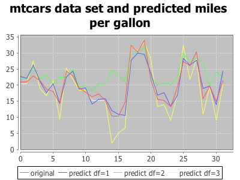
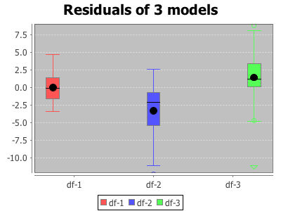

An example multivariate regression over the feul consumption for a set of cars given a set of attributes from the R dataset mtcars
mtcars - A data frame with 32 observations on 11 variables. * [, 1] mpg Miles/(US) gallon [, 2] cyl Number of cylinders [, 3] disp Displacement (cu.in.) [, 4] hp Gross horsepower [, 5] drat Rear axle ratio [, 6] wt Weight (1000 lbs) [, 7] qsec 1/4 mile time [, 8] vs V/S [, 9] am Transmission (0 = automatic, 1 = manual) [,10] gear Number of forward gears [,11] carb Number of carburetorsThe use example is taken from the example class ExampleMtCarsConsumption. The data is read as CSV and the target column is separated from the predictor variables.
val inputFile = "data/cars/mtcars.csv"
def readCars() = {
val reader = new MatrixReader {}
val M = reader.read(new File(inputFile))
val X = M(::, 1 until M.cols)
val Y = M(::, 0)
(X, Y.toDenseVector)
}
val (xMat, yVec) = readCars
val ols1 = OrdLeastSquares(xMat, yVec, 1)
val (est1, error1) = ols1.train()
val Y1 = ols1.predict(xMat)
val ols2 = OrdLeastSquares(xMat, yVec, 2)
val (est2, error2) = ols2.train()
val Y2 = ols2.predict(xMat)
val ols3 = OrdLeastSquares(xMat, yVec, 3)
val (est3, error3) = ols3.train()
val Y3 = ols3.predict(xMat)


The Beta parameter z-scores and p-values in the example are accessed using the following:
println(s"Model 1: P-Values\n")
printValues(ols1.betaPValue.toDenseVector)
println("\n")
println("Model 1: Z-Values\n")
printValues(ols1.betaZScore.toDenseVector)
println(s"Model 1: Critical Beta Value: ${ols1.criticalBetaZValue}")
println(s"Model 1: Critical PValue: ${ols1.criticalPValue}")
Model 1: P-Values
0.0
0.3652613211066145
0.3984387352974198
0.3976368502242137
0.0048969511992071005
1.0568802173001641E-43
0.0033237033130584254
0.19474123424914283
1.0222461526756827E-20
0.018876079706805125
0.30077756098169905
Model 1: Z-Values
46.37027436574356
-0.42000880973224936
0.05025928055824771
-0.08096411105282786
2.966548141714111
-14.002635401119749
3.0944263212321235
1.197618530512598
9.498501040691133
2.470190781809722
-0.7515926480275557
Model 1: Critical Beta Value: 1.6000000000000003
Model 1: Critical PValue: 0.11092083467945553